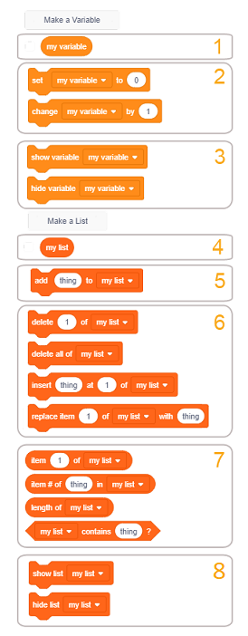

Appendix¶
Funkcije blokova¶
Oblik blokova u Scratchu osigurava se da povezivanjem mogu stvoriti samo sintaktički ispravne skripte. Postoje samostalni i funkcionalni blokovi. Samostalni blokovi (start, snop, C-blokovi i kraj) odgovaraju jezičnim naredbama. Funkcionalni (blok reporteri i logički blokovi) pohranjuju vrijednosti za samostalne blokove. Razgovarali smo o vrstama blokova na Scratchu detaljnije u lekciji 3 ovog praktičnog dijela, a sada ćemo predstaviti funkcije osnovnih skupina blokova i nekih skupina iz poglavlja Proširenje.
Kretanje blokova¶
 Kretanje
Kretanje

Naredbe povezane s blokovima u ovoj grupi mogu izvršavati samo likovi. Pozornica je nepokretna i stoga ne može izvršiti nijedan nalog za kretanje. U grupi Kretanje postoji 18 blokova, jedan više od Scratch 2.0. Dodan je blok  .
.
Da bi ih lakše koristili, blokovi koji izvode slične funkcije stoje blizu i formiraju podskupine. Funkcije podskupina su sljedeće:
pomicanje lika ravno ili kružno
zauzimanje lika u zadanoj poziciji,
usmjeravanje lika
pomicanje lika promjenom njegovih koordinata,
držeći lik unutar granica pozornice,
postavljanje načina na koji se lik rotira,
zadržavajući trenutne koordinate i orijentaciju likova.
Blokovi prvih šest skupina su blokovi snopa, a blokovi u sedmoj skupini su izvještači, čija je funkcija pohranjivanje podataka. Ne mogu samostalno stajati, ali su umetnuti u ulazna polja drugih blokova, specificirajući na taj način svoje postupke.
Blokovi prve grupe izvode relativno kretanje, kretanje u odnosu na trenutni položaj i orijentaciju. Nasuprot tome, blokovi druge grupe pomiču lik do određene točke u fazi, bez obzira gdje se lik trenutno nalazi. Takvo kretanje naziva se apsolutnim kretanjem.
U polje unosa blokova pokreta unosi se niz podataka: odredišne koordinatne vrijednosti, kut rotacije, broj koraka ili trajanje pokreta. Jedan korak odgovara jednom pikselu. Vrijeme se izražava u sekundama, a kutovi u stupnjevima.
Za neke blokove odabrano je odredište s padajućeg popisa. To može biti pokazivač miša ili jedan od znakova koji sudjeluju u projektu, kao i točka čije se koordinate generiraju nasumično.
Blok  može postaviti jedan od tri moguća načina rotacije: sve oko, lijevo-desno i zakretati. Prva metoda znači da se lik može okretati za bilo koji od 360 stupnjeva. Lijevo-desno znači da se lik može okretati samo lijevo ili desno, a bilo koji drugi smjer je onemogućen. Zadnje znači da je lik uvijek okrenut ravno.
može postaviti jedan od tri moguća načina rotacije: sve oko, lijevo-desno i zakretati. Prva metoda znači da se lik može okretati za bilo koji od 360 stupnjeva. Lijevo-desno znači da se lik može okretati samo lijevo ili desno, a bilo koji drugi smjer je onemogućen. Zadnje znači da je lik uvijek okrenut ravno.
Blokovi grupe Kretanje detaljno su obrađeni u lekciji 2 ovog praktičnog programa.
Blokovi grupe Izgled¶
 Izgled
Izgled

Blokovi ove grupe kontroliraju izgled likova. Sedam od 21 bloka grupe Look može upravljati izgledom pozornice.
Kad je lik u fokusu, vidi se 20 blokova, a kada je pozornica u fokusu, vide se 3 podgrupe. Blok  omogućava promjenu pozadine i čekanje dok se to dogodi može se vidjeti samo kad je pozornica aktivna (nije vidljivo kad je lik u fokusu). Ostali blokovi koji se mogu pridružiti pozornici također se vide u ovom slučaju. Funkcije podskupina su sljedeće:
omogućava promjenu pozadine i čekanje dok se to dogodi može se vidjeti samo kad je pozornica aktivna (nije vidljivo kad je lik u fokusu). Ostali blokovi koji se mogu pridružiti pozornici također se vide u ovom slučaju. Funkcije podskupina su sljedeće:
pokazujući što lik govori ili razmišlja,
mijenjanje kostima lika ili pozadine pozornice,
mijenjanje veličine znaka,
rad s grafičkim efektima koji se mogu pripisati likovima i pozornici,
pokazivanje ili skrivanje lika,
prenošenje karaktera u željeni sloj prikaza,
izvjestitelji koji ukazuju na kostim koji teče i veličinu lika, ili na tekuću pozadinu pozornice.
Grafički efekti koji se mogu pridružiti liku su:
|
Primjerice, promjena boje može stvoriti iluziju da lik izražava emocije ili treperi, a može izgledati kao da se pojavila posve nova stvar. Ako za promjenu boje koristite naredbu pečata, možete nparaviti atraktive uzorke, poput duge.
Učinak ribljeg oka mže stvoriti iluziju da se lik približava ili odlazi od ekrana, deblja se i slično. Može se koristiti kao prijelaz između kostima.
Efekt vrtloga može simbolizirati putovanje kroz vrijeme, teleportaciju, a također vrtoglavicu, mučninu.
Učinak pikselacije čini da likovi izgledaju kao u prvim računalnim igrama, kada su monitori imali malu rezoluciju, a lik je cenzuriran ili blokiran na pozornici.
Mozaik efekt duplicira lik bez kloniranja.
Promjenom svjetline, znak može zasjati ili potamniti, a efektni lik duha može biti nevidljiv za korisnika, ali drugi likovi projekta mogu ga otkriti.
Blockovi  i
i  razlikuju se od blokova koji su u prethodnoj verziji Scrtacha obavljali slične funkcije.
razlikuju se od blokova koji su u prethodnoj verziji Scrtacha obavljali slične funkcije.
Kad je pozornica u fokusu, možete vidjeti 8 blokova podijeljenih u 3 podskupine: za promjenu pozadine, postavljanje grafičkih efekata u pozadinu i reportera koji pokazuje na trenutnu pozadinu. Novinar pozadinskog imena, koji je postojao u Scratch 2.0, ne postoji u novoj verziji.
Blokovi Looks detaljno su obrađeni od predavanja 3 ovog praktičnog programa.
Blokovi grupe Zvuk¶
 Zvuk
Zvuk

U projektima se mogu koristiti dvije vrste zvuka: zvukovi i note. Blokovi u ovoj grupi koriste se za rad sa zvukovima, a blokovi u odjeljku Music koriste se za note. Zvukovi su dostupni samo uvozom, snimanjem ili uz ugrađene biblioteke zvukova. Sviraju se pomoću zvučnih blokova koji kontorliraju glasnoću, tempo i još mnogo tuga. Grupa Zvučnih blokova značajno je izmijenjena u odnosu na način kako je organizirani u jezičnoj verziji Scratch 2.0. neki blokovi koji su prethodno ibli u ovoj grupi premješteni su u proširenje Music
Funkcije podskupina su slijedeće:
pokrenuti, zaustaviti i reproducrati zvukove
primjena zvučnih efekata
kontrola glasnoće
Pokrenite, zaustavite i reproducirajte zvukove
Blok  reproducira određeni zvuk, pauzirajući skriptu dok ne završi. Za razliku od njega, blok
reproducira određeni zvuk, pauzirajući skriptu dok ne završi. Za razliku od njega, blok  Zbog toga se zvuk pokretanja bloka obično koristi za najavu akcije, informiranje lika da je cilj postignut ili označavanje određenih događaja.
Zbog toga se zvuk pokretanja bloka obično koristi za najavu akcije, informiranje lika da je cilj postignut ili označavanje određenih događaja.
S druge strane, blok do reprodukcije obično se koristi za reprodukciju “pozadinske glazbe”. Naime, ovaj blok se postavlja zauvijek u blok i tako se tijekom izvođenja projekta svira odgovarajuća glazbena tema. Može se koristiti i za odlaganje izvršenja skripte umjesto kontrolnog bloka čekanja.
Blok zvukovi zaustavljanja zaustavit će sve trenutne zvukove - sve likove i pozornicu. Na primjer, ako projekt nudi opcije glazbe ili ne, ovaj se blok koristi za isključivanje glazbe. Također je uobičajeno da se svi zvukovi prekinu prije nego što projekt pređe na sljedeću scenu i slično.
Primjena zvučnih efekata
Blokovi koji postavljaju i mijenjaju zvučne efekte uvedeni su u Scratch 3.0. Iako novi uređivač zvuka nudi više zvučnih efekata (vidi dolje u odjeljku uređivača zvuka), blokovi podržavaju samo dva: postavljanje i promjenu tona te pomicanje zapisa zvuka lijevo / desno.
Kontrola glasnoće
Ti blokovi utječu samo na lik (ili pozadinu) na koju su priloženi. Na primjer, klikom na znak može ušutjeti zvuk, ako se znak smanji i na taj način čini se da nije od korisnika, zvuk može biti isključen. Također, ako se koriste blokovi iz nastavka Music, neki dijelovi skladbe mogu se čuti glasnije, a drugi tiši.
Osam od tih blokova su snop blokovi, a jedan je reporter koji pohranjuje informacije o tomu.
Blokovi grupe Događaji¶
 Events
Events

Blokovi u ovoj grupi pokreću izvršavanje skripti i šalju i primaju poruke. Ima ih 9 i podijeljeni su u 3 podgrupe. Kao i u ovoj verziji Scratch, otkrivanje videa premješta se u proširenja s padajućeg popisa blokova  ovaj blok izostavljeno.
ovaj blok izostavljeno.
Funkcije podskupina su slijedeće:
pokretanje skripti s korisničkom radnjom,
pokretanje skripti s korisničkom radnjom,
omogućuju najavu i primanje poruka.
Pokretanje skripti s korisničkom radnjom
Korisnik može pokrenuti izvršenje projekta klikom na gumb  , neke od likova projekta, pozadine ili pritiske na tipkovnici. Uobičajeno je da izvedba projekta započne klikom na zelenu zastavicu. Tada se aktiviraju sve skripte koje započinju s ovim blokom. To su skripte koje izvode različite inicijalizacije, pa predaju upravljanje ostalim skriptama. Na primjer, brišu sve elemente s popisa, resetiraju varijable, postavljaju scene prikazivanjem ili skrivanjem znakova i izmjenom kostima, brisanjem bilo čega nacrtanog, izvođenjem pozadinske glazbe i slično. Iako je u potpunosti moguće raditi projekte bez ovog bloka, ne preporučuje se. Jedini način na koji bi se projekt mogao pokrenuti bez ovog bloka bilo bi aktiviranje skripti koje započinju s nekim drugim blokom u ovoj podskupini. U ovom slučaju projekt bi trajao samo dok se ne dovrše skripte koje ovise o početnim skriptama.
, neke od likova projekta, pozadine ili pritiske na tipkovnici. Uobičajeno je da izvedba projekta započne klikom na zelenu zastavicu. Tada se aktiviraju sve skripte koje započinju s ovim blokom. To su skripte koje izvode različite inicijalizacije, pa predaju upravljanje ostalim skriptama. Na primjer, brišu sve elemente s popisa, resetiraju varijable, postavljaju scene prikazivanjem ili skrivanjem znakova i izmjenom kostima, brisanjem bilo čega nacrtanog, izvođenjem pozadinske glazbe i slično. Iako je u potpunosti moguće raditi projekte bez ovog bloka, ne preporučuje se. Jedini način na koji bi se projekt mogao pokrenuti bez ovog bloka bilo bi aktiviranje skripti koje započinju s nekim drugim blokom u ovoj podskupini. U ovom slučaju projekt bi trajao samo dok se ne dovrše skripte koje ovise o početnim skriptama.
Napomena. Blok  je vidljiv samo kada je pozornica u fokusu.
je vidljiv samo kada je pozornica u fokusu.
Najavljivanje i primanje poruka
Poruke su glavni mehanizam za usklađivanje ponašanja likova u projektu i mogu poslužiti za provođenje postupaka. Najavljivanje se koristi za pozivanje skripti koje je potrebno aktivirati kada se ispune u određeni uvjeti.
Broadcasting and receipt of messages
Emitiranje poruka glavni je mehanizam za koordinaciju ponašanja stručnjaka koji sudjeluju u projektu, a može se koristiti i za realizaciju postupaka. Emitiranje se koristi za pozivanje skripti koje bi trebalo aktivirati kada se ispune određeni uvjeti. Skripte, čiji je prvi blok  bit će pozvani nakon objave određene poruke. Ako se ista poruka ponovo šalje dok se skripta još uvijek pokreće, trenutna izvedba bit će prekinuta i skripta će se opet pokrenuti ispočetka. Dakle, ako u skriptu stavimo blok koji započinje blok ‘’kad primimo’’, koji deklarira poruku na koju skripta odgovara, imamo situaciju da se skripta sama poziva. To se naziva rekurzije, i može se koristiti za stvaranje fraktala, pravljenje petlji zauvijek i slično.
bit će pozvani nakon objave određene poruke. Ako se ista poruka ponovo šalje dok se skripta još uvijek pokreće, trenutna izvedba bit će prekinuta i skripta će se opet pokrenuti ispočetka. Dakle, ako u skriptu stavimo blok koji započinje blok ‘’kad primimo’’, koji deklarira poruku na koju skripta odgovara, imamo situaciju da se skripta sama poziva. To se naziva rekurzije, i može se koristiti za stvaranje fraktala, pravljenje petlji zauvijek i slično.
Blokovi grupa Upravljanje¶
 Control
Control

Blokovima ove grupe upravlja se tijekom izvođenja skripte. Omogućuju grananje, ponavljanje i prekid izvođenja, kao i rad s klonovima znakova. Ukupno je 11, od kojih je jedna početna (hat), 2 su konačna, 3 su bočna, 5 C-blokova, a ‘’ako je ostalo’’, blok je u obliku slova E. Postoji 5 podskupina čije su slijedeće funkcije:
blok čekanja,
blokovi ponavljanja,
razgranati blokovi,
blokovi za uvjetno ponavljanje,
blok zaustavljanja,
blokovi za rad s klonovima.
O funkcijama ovih blokova razgovarali smo u lekcijama 5, 6 i 7 ovog praktičnog programa.
Rad s klonovima
Kloniranje je značajka koja omogućuje liku da stvori kopiju sebe dok projekt traje. Svaki klon (duplikat) ima iste kostime, zvukove i skripte kao izvornik, ali je inače neovisan. Kloniranje se razlikuje od ostavljanja lika slike utisnutog na pozornici po tome što su klonovi zasebni znakovi koji mogu pokrenuti skripte i djelovati na njih. Također se razlikuje od znakova stvorenih dupliciranjem postojećeg znaka po tome što su obični duplikati stalni i pojavljuju se popisi znakova, a nema klonova na popisu znakova i nestaju nakon dovršetka projekta.
Kloniranje se koristi kada postoje slični likovi u projektima koji rade slične stvari. Budući da su klonovi stvoreni od strane projekta, a ne korisnika, kloniranje oslobađa korisnika da napravi iste promjene u svakom od mnogih znakova. Na primjer, kloniranje se može koristiti za stvaranje puno prijatelja i neprijatelja u igrama i za posebne efekte, poput vatrometa i snijega.
Klonovi obično izvrše akciju onda kada su stvoreni. Blok  pokreće skriptu koja se izvršava kada se stvori klon. Znak se može pridružiti u više skripti počevši s ovim blokom i svi će se oni pokrenuti u isto vrijeme kada se klon stvori. Skripta se može pokrenuti na više klonova odjednom. Neke radnje koje ovaj blok može izvesti su postavljanje klona u nasumični položaj ili premještanje klona dok se on ne sudari s likom.
pokreće skriptu koja se izvršava kada se stvori klon. Znak se može pridružiti u više skripti počevši s ovim blokom i svi će se oni pokrenuti u isto vrijeme kada se klon stvori. Skripta se može pokrenuti na više klonova odjednom. Neke radnje koje ovaj blok može izvesti su postavljanje klona u nasumični položaj ili premještanje klona dok se on ne sudari s likom.
Blokovi grupe očitanja¶
 Sensing
Sensing

Ovu skupinu čine blokovi koji omogućuju projektu da prihvati doprinose s različitih uređaja, slično kao ljudska osjetila koja prikupljaju informacije iz svoje okoline. U grupi Sensing postoji 18 blokova. Za razliku od Scratch 2.0, u ovoj grupi više nema tri bloka koji su se bavili podešavanjem videozapisa i praćenjem kretanja, ali dodaj ne blok . Ovaj blok regulira može li se znak na cijelom zaslonu povući ili ne, što je prethodno podešeno u likovima. Blokovi povezani s otkrivanjem videozapisa premješteni su u odgovarajuće proširenje.
Blokovi su podijeljeni u 6 podskupina čije su sljedeće funkcije:
pohranjivanje podataka o položaju lika u odnosu na pokazivač miša i druge predmete
unos s tipkovnice
pohranu podataka o tekućim operacijama miša i tipkovnice,
zadržavanje trenutne vrijednosti volumena,
rad s tajmeorm,
čuvanje parametara likova i pozornice,
spremanje trenutnog vremena i korisničkih podataka.
Među blokovima ove skupine samo 3 mogu stajati samostalno, svi ostali su funkcionalni. Tako su blokovi prve skupine umetnuti u kontrolne blokove, koji bi trebali osigurati da se izvode različite radnje ovisno o položajulika. Blokovi druge skupine odgovaraju informacijama koje osoba prikuplja osjetom dodira, a treće podacima koji su prikupljeni čulom sluha. Mjerač vremena može se koristiti za ograničavanje vremena igranja ili vremena koje je potrebno za rješavanje testnog zadatka. Blok koji pohranjuje parametre znakova i pozornice može pružiti mnogo podataka o svim objektima koji sudjeluju u projektu. Informacije koje osoba prikuplja putem vida i računalo s video kamerom mogu se koristiti ako je u projekt uključeno proširenje Video Sensing.
Funkcije većine blokova u ovoj skupini opisali smo kroz primjere u prethodnim lekcijama. Ovdje ćemo samo spomenuti funkcije logičkih blokova i izvješća trenutnog vremena.
Logički blokovi
Među blokovima u ovoj skupini je 5 logičkih blokova. Svaki od njih može vratiti samo jednu od dvije vrijednosti: istinsku ili lažnu, ovisno o tome je li ispunjen uvjet koji im je dodan. Logički blokovi postavljaju se u ulazna polja šesterokutnog oblika upravljačkih blokova.
Trenutno vrijeme i informacije o korisniku
Reporter  može dati slijedeće informacije o tekućem vremenu.
može dati slijedeće informacije o tekućem vremenu.
Blokovi grupe Operations¶
 Operators
Operators

U grupi Operations nema samostalnih blokova koji bi odgovarali jezičnim naredbama. Svi blokovi su funkcionalni, to jest pohranjuju vrijednosti numeričkih, nizova ili logičkih izraza i smještaju se u odgovarajuća ulazna polja samostalnih ili drugih funkcionalnih blokova. Novi blok ove grupe je  , koja vraća true ili false, ovisno o tome sadrži li niz dani znak ili ne.
, koja vraća true ili false, ovisno o tome sadrži li niz dani znak ili ne.
Grupa Operations sadrži ukupno 18 blokova - 11 izvjestitelja i 7 logičkih blokova koji omogućuju sljedeće vrste operacija:
osnovna aritmetika - zbrajanje, oduzimanje, množenje i dijeljenje,
generiranje slučajnih brojeva,
usporedbe - veći, manji, jednaki,
formiranje složenih logičkih izraza,
nizove
cijeli brojevi,
računanje vrijednosti matematičkih funkcija.
Osnovne aritmetičke operacije mogu se izvesti prkeo cijlih i realnih brojeva. Samo podjela na nulu (djelitelj = 0) može dovesti do problema jer ne postoji broj pomnožen s nulom koji daje broj osim nule (kvocijnst * djelitelj = djelitelj). Stoga bi se programi trebali spriječiti nula. Ovako smo to pokazali u projektu Young Mathematician u lekciji 7 ovog praktičnog dijela.
Interpretacijski tumač vraća jednu od vrijednosti Infinity, NaN ili -Infinity kao rezultat nule, ovisno o tome je li djelitelj pozitivan broj, 0 ili negativan broj.
Objasnili smo uporabu slučajnih brojeva, logičkih izraza i složenih logičkih izraza nastalih logičkim operacijama i, ili, i ne, kroz primjere u prethodnim lekcijama.
String operacije omogućuju vam povezivanje dva niza, izdvajanje znaka na zadanom položaju niza, određivanje duljine niza i provjeravanje da li niz sadrži zadani znak. String operacije detaljno su opisane u lekciji 9 ovog priručnika.
String operacije omogućuju vam povezivanje dva niza, izdvajanje znaka na zadanom položaju niza, određivanje duljine niza i provjeravanje da li niz sadrži zadani znak. String operacije detaljno su opisane u lekciji 9 ovog priručnika.
Matematičke funkcije koje su odabrane s padajućeg popisa blokova  su:
su:
|
|
|
|
|
|
Blokovi grupe Varijabla i lista¶
 Variables and Lists
Variables and Lists

Funkcije podskupina su slijedeće:
Za varijable
izvještaji o promjenjivim korisnicima,
postavljanje i promjena vrijednosti varijable,
prikazivanje ili skrivanje promjenjivog novinara na pozornici.
Za liste
izvjestitelji s popisa korisnika,
dodavanje elementa na kraj popisa,
operacije na listu,
informacije o popisu za povratak,
prikazivanje ili skrivanje izvjestitelja s popisa na pozornici.
Operacije koje su podržane za rad s lista su:
|
Sljedeće informacije mogu se dobiti o listi:
|
Varijable i liste mogu biti globalni - za sve likove ili lokalni - za samo jedan lik. Varijable i liste koji su stvoreni za pozornicu vidljivi su svim likovima.
Trenutne vrijednosti varijable mogu se pratiti na pozornici putem monitora varijable. Promjenjivi monitori mogu biti u tri formata:
|
U predavanju 7 detaljno smo razgovarali o radu sa varijablama i radu s listama u lekciji 9 ovog praktičnog programa.
Blokovi grupe Moji blokovi¶
 My blocks
My blocks

Počevši od programa Scratch 2.0 korisniku je predstavljeno da izrađuje vlastite blokove i tako implementira procedure. Nova verzija Skcratcha promijenila je boju i oblik korisničkih blokova.
Kada korisnik zatraži da unesete novi blok, pojavljuje se početni blok - definicija, koja bi trebala slijediti radnje koje bi novonavedeni blok trebao izvesti. Tada se na listi blokova pojavljuje blok s dodijeljenim imenom u definiciji. Novi blok definiran korisnikom može se dalje koristiti kao i bilo koji drugi blok.
Novi blok može imati i polja za unos. Parametri se unose u ulazna polja definicijskog zaglavlja. Postupci također mogu imati više parametara. Kada se postupak poziva na novi blok, u polje unosa unose se argumenti. Argumenti zamjenjuju svaku pojavu odgovarajućih parametara u postupku.
U predavanju 8 ovog praktikuma razgovarali smo više o tome kako stvoriti i koristiti uvedene blokove.
Blokovi grupe proširenja Pen¶
 Pen
Pen

Na Scratchu se svakom liku mogu dati položaj, smjer i smjer kretanja te može ostaviti trag pri kretanju. Pri tome, veličina, oblik i boja samog lika ne utječu na trag koji ostavlja, kao što likovi crtaju olovkom. Lik također može biti nevidljiv ili se sastoji od jedne točke, ali to ne utječe na njegov crtež. Sposobnost lika da ostavi trag pri kretanju temelji se na blokovima u ovoj grupi. Slika koju likovi oblikuju pamti se kao zbirka figura, zajedno s njihovim parametrima. Za definiranje ove slike koristi se izraz vektorska grafika.
Blokovi u proširenju Pen organizirani su u 5 podskupina. Naredbe za sjenilo olovaka koje su korištene u prethodnim jezičnim verzijama ukinute su, a umjesto da specificiraju boju olovke samo brojem, boja je sada definirana atributima nijanse, zasićenosti i svjetline. Svi blokovi ove grupe u nizu blokova.
Funkcije podskupina su slijedeće:
brišući sve što je nacrtano,
ostavljajući pečat lika,
podizanje i spuštanje olovke,
postavljanje i promjena atributa olovke,
postavljanje i promjena debljine olovke.
Grafički uređivač u ovoj verziji Scratcha radi s tzv HSB (nijansa, zasićenost, svjetlina) model boja. To znači da se boja formira postavljanjem 3 komponente: nijansa, zasićenost i svjetlina. Nijansa boja označava broj boje u spektralnoj paleti, to jest, samu boju. Opisana je u krugu boja u kojem kut 0 ° predstavlja crvenu (boja boje 0) i 180 ° plavu zelenu (cijan, boja broj 100). Zasićenost boje govori svojim intenzitetom - što je veća boja čistija. Zasićenost može biti od 0 do 100%, a intenzitet 0% predstavlja bijelu boju, a intenzitet 100% čistu boju. Svjetlina boje ovisi o količini crne boje koja se miješa s promatranom bojom.
Blokovi grupe proširenja Tekst u govor i prevedi¶
 Text to Speech and
Text to Speech and  Translate
Translate

Proširenje teksta u govor
Ovo proširenje može se koristiti samo ako je računalo povezano na internet , je koristi Amazon Web Services
Kada iz grupe Extensions from the group Extensions, u paleti blokova pojavit će se tri nova bloka. Omogućuju da lik na jeziku koji ste postavili u trećem bloku ove grupe izgovara tekst koji upišete u polje za unos prvog bloka. Također možete postaviti glas koji se izgovara: ženski (sopran ili alt) ili muški (tenor ili bas). To je dodijeljeno drugom bloku ove grupe.
Proširenje prevedi
Ovo se proširenje može koristiti samo ako je vaše računalo povezano s internetom , jer koristi Google
Kada iz grupe Extensions izabereš|translate_extension|, dva nova bloka pojavit će se u paleti blokova. Omogućuju prevođenje teksta ispisanog na jednom jeziku na drugi jezik. blok  označava na koji je jezik postavljen Scratch. Tekst koji je napisan na trenutnom jeziku u prvom unosnom polju
označava na koji je jezik postavljen Scratch. Tekst koji je napisan na trenutnom jeziku u prvom unosnom polju  prevodi na jezik odabran s padajućeg popisa drugog polja za unos. Ako se prijevodni blok postavi u okvir za unos
prevodi na jezik odabran s padajućeg popisa drugog polja za unos. Ako se prijevodni blok postavi u okvir za unos say ili think blok, možete vidjeti prijevod.
Uporaba ugrađenog grafičkog uređivača¶
Scratch ima ugrađeni uređivač slika koji možete koristiti za stvaranje i uređivanje znakova, kostima i pozadina. Ovaj uređivač podržava crtanje u dva načina: rasterskom i vektorskom.
Računala mogu pamtiti slike na dva načina: rasterske i vektorske.
U rasterskoj grafici slika se pamti kao pravokutna mreža piksela - bitmape. Bitmape se tehnički određuju širinom i visinom znaka u pikselima i brojem bitova potrebnim za pamćenje boje piksela. Na primjer, ako imamo samo 16 boja, potrebna su nam 4 bita po pikselu da bismo zapamtili njegovu boju. Rasterska grafika ovisi o razlučivosti. Rasterske slike nije moguće povećati bez gubitka kvalitete slike.
Taj se nedostatak nadvladava primjenom vektorske grafike, koja pamti sliku kao zbirku figura, zajedno s njihovim podacima (parametrima) koji određuju kako će se slika crtati i gdje će se nalaziti. Grafika kornjača je primjer vektorske grafike.
Sljedeća slika prikazuje uvećanu sliku crte povučene na ova dva načina.
Korinsičko sučelje¶
Sljedeća slika prikazuje izgled ugrađenog uređivača slika u vektorskom i mapu bitova.


Područje kostima
S lijeve strane je područje kostima (1) s ikonama za svaki kostim i redni broj kostima. Na dnu prostora kostima nalazi se gumb za stvaranje novih kostima. Za uređivanje različitih kostima u uređivaču slika, jednostavno kliknite ikonu željenog kostima i odgovarajuća slika će se pojaviti u području za uređivanje - crtanje platna (7).
Možete dodati novi kostim (ili pozadinu) tako da pokažite mišem iznad gumba pri dnu ovog područja i odaberite jednu od opcija koja će se pojaviti. Možete odabrati kostim iz biblioteke kostima, nacrtati vlastiti, preuzeti datoteku slike s računala, fotografirati ili odabrati “kostim iznenađenja”, koji je nasumično odabran iz biblioteke kostima.
Napomena. Biblioteka kostima sadrži pojedinačne kostime svih likova koji se nalaze u Biblioteci kostima.


Prebacivanje iz vektorskog u mapu bitova i obrnuto
Opcije se koriste u oba načina¶
Te se opcije nalaze iznad platna za crtanje.

Promjena boje
Klikom na unosno polje referentnog bloka boja otvara se padajući izbornik koji sadrži klizače: boja, zasićenost i svjetlina, a ispod njih pipeta za uzorkovanje boja. Željenu boju možete postaviti pomicanjem klizača ili pritiskom na pipetu.
Pomicanjem klizača u boji mijenjate nijansu boje (na primjer, od crvene do plave). Ovaj se alat najviše koristi jer ima najveću razliku između boja. Pomicanjem klizača zasićenost mijenja intenzitet boje: 100 je odabrana boja, 50 je svjetlije boje, a 0 je potpuno bijela. Pomicanjem klizača svjetlina podešavate svjetlinu koliko boja će biti zatamnjena: svjetlina 0 je potpuno crna, dok je 100 odabrana boja.
Ako se klikne pipeta, pojačava se povećalo s krugom u sredini. Da biste odabrali željenu boju, trebate postaviti sredinu povećala iznad dijela platna na kojem se nalazi ta boja i kliknuti.
Četiri su mogućnosti iznad tri klizača. Omogućuju različite načine punjenja. Područje možete ravnomjerno ispuniti jednom bojom ili gradijentom, s nijansama boje. Ako kliknete na neku od opcija osim opcije pune boje, prikazat će se dvije odabrane boje:  . Klikom na prvu ili drugu boju možete ih smjestiti. Klikom na zamjenu između dvije boje mijenja se njihov redoslijed. Stilovi ispunjavanja su: jednobojni, okomito linearni gradijent, vodoravno linearni gradijent i kružni gradijent.
. Klikom na prvu ili drugu boju možete ih smjestiti. Klikom na zamjenu između dvije boje mijenja se njihov redoslijed. Stilovi ispunjavanja su: jednobojni, okomito linearni gradijent, vodoravno linearni gradijent i kružni gradijent.
 Promjena debljine olovke
Promjena debljine olovke
Postoji ulaz za odabir debljine olovke. Unesite veličinu ili upotrijebite strelice sa strane da biste je promijenili. Što je veći broj, linija će biti deblja.
Nazivanje kostima
Naziv kostima važan je za organizaciju, a ponekad i za programiranje projekta. Kako je svakom kostimu dodijeljen vlastiti redoslijed, nije dobro kostime imenovati samo brojevima koji ne sadrže druge znakove. Dajte kostimu novo ime klikom na tekstnu traku u gornjem lijevom dijelu opcija i upisivanjem imena.
 Kopirati (Copy) i Zalijepiti (Paste)
Kopirati (Copy) i Zalijepiti (Paste)
Drugi red opcija uključuje gumbe za kopiranje i zalijepiti. Opcija kopiranja odabrano područje kopira, zalijepivši ga na drugo mjesto. Također možete koristiti prečace: Ctrl + C za kopiranje i Ctrl + V za zalijepiti. Prvo odaberite pravokutno područje koje želite kopirati, a zatim ga povucite na mjesto gdje želite kopirati.
 Poništi i ponovo
Poništi i ponovo
Desno od naziva kostima nalaze se dva gumba za poništavanje i ponavljanje. Ovi gumbi omogućuju vam da poništite posljednju radnju i ponovite radnju poništavanja. Gumb za ponavljanje nije moguće koristiti ako prethodno nije upotrijebljen gumb za poništavanje. Ako napustite uređivač slika, sve što ste napravili u njemu postaje trajno i može se poništiti samo ručno. Prečac na poništavanju tipkovnice je Ctrl + Z.
Horizontalno  and Vertikalno okretanje
and Vertikalno okretanje
Kad odaberete stavku, možete je zakrenuti vodoravno ili okomito. U drugom retku opcije su dva gumba s dvije strelice, svaka usmjerena na isprekidanu liniju. Jedan s lijeve strane okreće odabrani objekt vodoravno, a drugi okomito.
Opcije samo za vektorski način rada¶
Ove su opcije dostupne samo kada je grafički uređivač u vektorskom načinu rada i ne pojavljuju se u mapi bitova.
Precizno kretanje predmeta
Kada se objekt odabere u vektorskom načinu, tipke sa strelicama mogu se koristiti za precizno pomicanje točno jednog piksela. A kad je u mapi bitova, odabrano područje se također može pomicati tipkama sa strelicama. Ova opcija može biti korisna ako želite nacrtati precizan crtež ili poravnati predmete.

 Outlines
Outlines
S desne strane opcije podešavanja boje nalazi se padajući izbornik koji vam omogućuje promjenu konture objekta. Ovaj padajući izbornik također ima tri klizača, ali za razliku od izbornika za podešavanje boja, ovdje nemate mogućnosti miješati dvije boje. Desno od padajućeg izbornika nalazi se tekstni okvir koji određuje debljinu konture. Možete unijeti broj ili ga promijeniti pomoću tipki sa strelicama.
organizirajte prikaze po slojevima
Sljedeću analogiju možemo objasniti kako su likovi predstavljeni na pozornici. Zamislite da je svaki lik naslikan na zasebnoj prozirnoj foliji i da su sve folije naslagane jedna preko druge preko one na kojoj je pozadina naslikana. Kretanje lika može se predstaviti kao kretanje filma na kojem je naslikan. Ono što pristaje prozirnim folijama na Scratchu su slojevi. Svakim potezom lik zamrači sve u slojevima ispod njega.
U gornjem desnom dijelu uređivača slika nalaze se četiri gumba koja vam omogućuju kretanje likova kroz slojeve:
|
 pomiče object skroz ispred,
pomiče object skroz ispred, pomiče blok skroz ispod
pomiče blok skroz ispod Grupiranje i razdvajanje
Grupiranje i razdvajanje
Ova se opcija koristi za grupiranje više objekata u jednu cjelinu. Kad postoji mnogo objekata koje je potrebno pomaknuti ili izbrisati odjednom, korisno ih je grupirati. Na taj će se način svi istovremeno moći kretati ili brisati. Kliknite i prevucite objekte (ili držite Shift i pritisnite svaki) da biste ih odabrali, a zatim kliknite gumb grupe. Svi se objekti dalje tretiraju kao jedan objekt.
Gumb za razdvajanje čini suprotno - odabranu skupinu možete podijeliti na manje dijelove. Ovaj gumb postaje vidljiv kada odaberete grupu i omogućuje vam grupiranje objekata.
Zaobljeno ili šiljato
Kada koristite alat za promjenu oblika, postoje dvije mogućnosti, s desne strane konture, koje omogućuju zakrivljenje kovrča poput elipse ili suženje poput pravokutnika. Ovo je korisno pri stvaranju oblika s zakrivljenim i šiljastim rubovima. Ako je odabrano više točaka (držite tipku shift i kliknite na više), navedena promjena primijenit će se na sve odabrane točke.
Rad u mapi bitova¶
 Crtanje slobodnom rukom
Crtanje slobodnom rukom
Možete postaviti boju crteža i debljinu kista odgovarajućim opcijama. Koristi opcije za poništavanje i ponovno pokretanje ako pogriješite. Gumica za brisanje pomaže i u slučaju pogreške.
 Crtanje linija
Crtanje linija
Možete postaviti boju crteža i debljinu kista odgovarajućim opcijama. Koristi opcije za poništavanje i ponovno pokretanje ako pogriješite. Gumica za brisanje pomaže i u slučaju pogreške.
 Crtanje kruga
Crtanje kruga
Može se nacrtati prazan ili ispunjen krug. Koristi Shift + povucite za crtanje kruga. Pomoću odgovarajućih opcija možete odabrati stil punjenja i promijeniti debljinu konture.
 Crtanje pravokutnika
Crtanje pravokutnika
Može se nacrtati prazan ili ispunjen pravokutnik. Koristi Shift + povucite za crtanje kvadrata. Pomoću odgovarajućih opcija možete odabrati stil punjenja i promijeniti debljinu konture.

 Pisanje teksta
Pisanje teksta
Kliknite bilo gdje na platnu, a zatim upišite svoj tekst kad vidite pokazivač. Zatim kliknite izvan područja teksta. Alat za odabir automatski odabire tekst, tako da možete promijeniti njegovu veličinu i orijentaciju. Koristi ručke (krugove i strelice oko teksta) za promjenu veličine i usmjeravanje teksta
 Popunjavanje zatvorenih područja
Popunjavanje zatvorenih područja
Područje možete ravnomjerno ispuniti jednom bojom ili gradijentom, s nijansama boje koristeći odgovarajuću opciju punjenja.
 Brisanje slobodnim pokretima
Brisanje slobodnim pokretima
Podesite veličinu gumice s odgovarajućom opcijom. Područja koja ste izbrisali postaju prozirna.
 Odabir pravokutnog područja
Odabir pravokutnog područja
Možete:
premjestite se na novu lokaciju povlačenjem,
povećavati, smanjivati i zakretati,
izbrišite pritiskom na trku za brisanje Del
Rad u vektorskom načinu¶
 Izbor objekta
Izbor objekta
Ona koristi ovaj alat za pomicanje, brisanje, promjenu veličine ili rotaciju objekta. Kada se objekt klikne, oko njega se pojavljuje okvir  , što znači da je odabran objekt.
, što znači da je odabran objekt.
Ako želite odabrati više objekata odjednom, držite lijevu tipku miša i prevucite mišem preko njih ili držite tipku Shift i kliknite istovremeno sve predmete koje želite odabrati. Kada pomičete pokazivač blizu središta predmeta, pokazivač miša mijenja oblik, što znači da možete pomicati objekt oko platna. Objekt se također može pomicati strelicama na tipkovnici. Odabrani objekt briše se pritiskom na tipku Del. Možete promijeniti veličinu objekta povlačenjem bilo kojih hvataljki - krugova oko ruba objekta. Da biste rotirali predmet oko njegovog središte uhvatite ga i povucite rotacijske strelice.
 Promjena oblika objekta
Promjena oblika objekta
Kliknite na objekt koji želite preoblikovati i na obodu objekta pojavit će se skup kontrolnih točaka, kao što je prikazano na slici (1). Kliknite jednu od njih i povucite je (2). Dodatnim upravljačkim točkama možete stvoriti klikom na konturu objekta (3). Možete izbrisati kontrolnu točku pomicanjem kursora na nju (4). Odabrana točka promijenit će boju, a zatim kliknite na nju (5). Gumbi i , koji se pojavljuju u opcijama, omogućuju vam zaokruživanje ili oštrenje rubova konture objekta.

 Crtanje slobodnom rukom
Crtanje slobodnom rukom
Ovaj je alat sličan alatu odgovarajućeg alata u mapi bitova. Držite pokazivač miša i pomaknite ga da biste nacrtali zakrivljenu liniju. Umjesto piksela, krivulja je ovdje definirana skupom kontrolnih točaka. Izgled linije možete promijeniti pomoću alata Reshape.
 Gumica
Gumica
Ovaj alat je sličan odgovarajućem alatu u radu u mapi bitova.
Ispunite zatvoreni prostor ili obojite konturu predmeta
Kantica u vektorskom načinu rada djeluje drugačije nego u mapi bitova, gdje se alat ispunjava u bilo kojem odabranom zatvorenom području. Vektorski način rada radi samo s vektorskim objektima. Nakon odabira ovog alata, klikom na objekt može se promijeniti njegova boja ili boja konture.
 Ispis teksta
Ispis teksta
Odaberite ovaj alat, a zatim kliknite bilo gdje na platnu i unesite tekst kad se pokazivač pojavi. Kada završite, kliknite izvan područja teksta. Alat Select automatski će odabrati tekst tako da možete promijeniti njegovu veličinu i orijentaciju. Za razliku od teksta u mapi bitova, tekst kreiran u vektorskom načinu može se uređivati u bilo koje vrijeme, čak i nakon napuštanja grafičkog uređivača. Da biste mogli izmijeniti njezin sadržaj, dovoljno je odabrati tekst.
 Crtanje linija
Crtanje linija
Linija je definirana s dvije kontrolne točke na oba kraja. Da biste nacrtali crtu, kliknite gdje želite započeti liniju i povucite do krajnje točke. Da biste nacrtali vodoravnu ili okomitu liniju, držite tipku Shift dok povlačite miš.
Da biste nacrtali zakrivljenu liniju, počnite s ravnom linijom, zatim odaberite alat Promijeni oblik, a zatim napravite Shift + klik bilo gdje na liniji i povucite novu kontrolnu točku. Ovo je način da se formira krivuljasta linija.
 Crtanje kruga
Crtanje kruga
Koristi ovaj alat za crtanje kruga crtanjem u boji. Kliknite da biste istaknuli gornji lijevi kut, a zatim povucite (Shift + povlačenje u krug) do veličine kruga koju želite. Možete promijeniti stil ispunjavanja (ispunjen ili prazan) i debljinu crta pomoću gumba u području opcija. Rezultirajući krug ima 4 ravnomjerno raspoređene kontrolne točke.
Crtanje pravokutnika
Koristi ovaj alat za crtanje kruga crtanjem u boji. Kliknite da biste istaknuli gornji lijevi kut, a zatim povucite (Shift + povlačenje u krug) do veličine kruga koju želite. Možete promijeniti stil ispunjavanja (ispunjen ili prazan) i debljinu crta pomoću gumba u području opcija. Rezultirajući krug ima 4 ravnomjerno raspoređene kontrolne točke.
Upotreba ugrađenog zvučnog uređivača¶
Scratch-ov uređivač zvuka omogućuje korisnicima uređivanje i reprodukciju zvukova. U glazbi se pojam remix koristi za označavanje nove, modificirane verzije glazbenog sastava.
The User Interface¶
Prozor uređivača zvuka podijeljen je u dva područja: popis zvukova (1) i područje uređivanja (2)

Popis zvukova
Popis zvukova nalazi se na lijevoj strani prozora i koristi se za odabir zvukova koje ćemo uređivati u uređivanju. Odabir zvuka vrši se klikom na njega. Odabrani zvuk dobiva plavu kutiju oko ikone sličnu aktivnom liku na popisu likova. U gornjem desnom dijelu aktivnog zvuka pojavljuje se “x”, čime je moguće izbrisati. Desnim klikom na ikonu zvuka otvara se izbornik prečaca koji nudi umnožavanje, izvoz i brisanje zvuka.
Na dnu ovog područja nalazi se gumb zvukova , koji omogućava uvođenje novih zvukova.
Područje uređivanja
Područje za uređivanje sadrži traku na vrhu (3), grafički prikaz zvuka u sredini (4) i traku ispod (5), koja sadrži 7 alata.
U traci iznad grafičkog audio prikaza nalaze se alati koji vam omogućuju uređivanje zvuka, ali ne proizvode efekte. Postoje:
|
In the bottom bar are the tools, which make special effects while the sound is playing:
|
 - ubrzavanje,
- ubrzavanje, - usporavanje,
- usporavanje, - eho,
- eho, - pojačavanje,
- pojačavanje, - stišavanje i
- stišavanje i - okretanje zvučnog zapisa unazad.
- okretanje zvučnog zapisa unazad.{kind=link}
{kind=link}
Ubrzаvаnjе i uspоrаvаnjе realizira sе tаkо štо sе umjesto nоtе reproducira višа ili nižа оd njе. Еfеkt еhо pоstižе sе pоnоvnim puštаnjеm zvukа nakon 0.15 sеkundi.